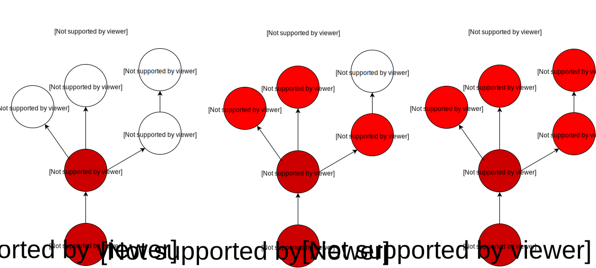

This tool allows you to analyze user location data to see how an infectious disease might currently be spreading across the population.
You must enter a valid userid and timestamp pair. You can find one via searching.
2008-11-01T03:38:36

How much elapsed time the simulation will model. For example, if Rakesh contracted Ebola on Dec 1st at 10am, and you wanted to see if he infected any other users before he returned home 3 days later on Dec 3rd at 10am, you would enter Dec 1st, 10am into the Time When Infected field, and enter 72 hrs into this field as 72:00.
Time When Infected
72:00
This tool is currently very slow to compute results. We recommend you limit the simulation duration to only 5 or 10 minutes because longer simulations could take hours, or even days to complete.